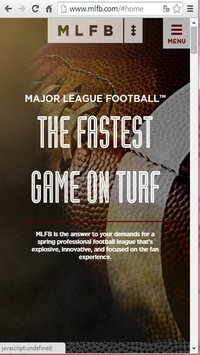
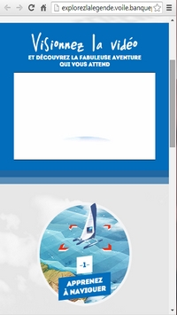

Des actions identifiables
Lors du processus de création d'un site Internet, il est nécessaire de prendre la place de l'internaute afin de penser comme lui et de pouvoir créer le contenu le plus ergonomique possible. Et cela passe par une navigation simple et rapidement compréhensible. L'utilisateur ne doit pas passer du temps à se poser des questions inutiles.
Dans une application orientée mobile, les doigts, notamment le pouce de l'internaute, lui servent de curseur. Beaucoup de fonctionnalités très utiles sur un ordinateur sont compliquées voire impossible à mettre en place. Dans d'autres cas, des raccourcis ou applications qui simplifient la navigation sur ordinateur ne fonctionneraient pas ou seraient inutiles sur un mobile. De même, toutes les actions de survol du curseur ne seront pas prises en compte dans une application orientée mobile.
Pour simplifier le plus possible la navigation sur un site orienté mobile, il est nécessaire de rendre les actions clairement identifiables. Lorsque l'internaute doit cliquer, il doit de suite savoir où. Ce critère aborde l'idée d'affordance : un lien doit prendre une forme plus évidente sur une application mobile, comme un bouton par exemple.
Major League of Football
 Le site responsive Major League of Football répond parfaitement à ce critère. Sur la page d'accueil, qui est assez épurée, ne se trouvent que deux boutons qui sont visibles : le logo qui revient à cette même page et le menu, qui déroule un onglet sur le côté droit de l'écran avec toutes les possibilités de navigation dans ce site. L'utilisateur n'a pas à se demande où il doit cliquer pour accéder au contenu, les boutons sont graphiquement identifiables.
Explorez la légende
 Le site responsive Explorez la légende ne répond pas à ce critère d'actions clairement identifiables. Lorsqu'il est disponible sur un petit écran, l'utilisateur peut penser qu'il a la possilibité de cliquer sur les images comme celle ci-contre (« 1, apprenez à naviguer »), cependant ce n'est pas le cas. Il est dit plus bas qu'il faut ouvrir le site via un ordinateur ou un tablette pour accéder à son contenu intéractif.